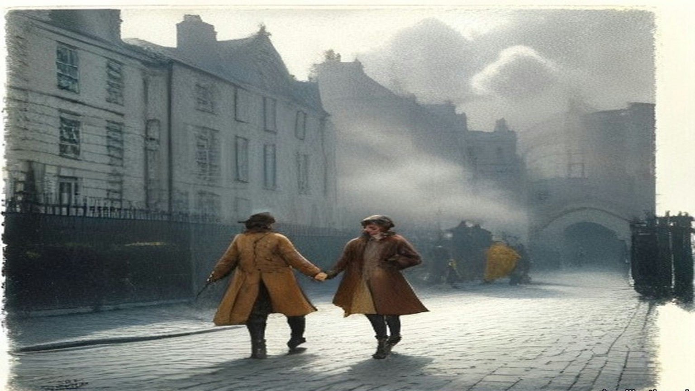
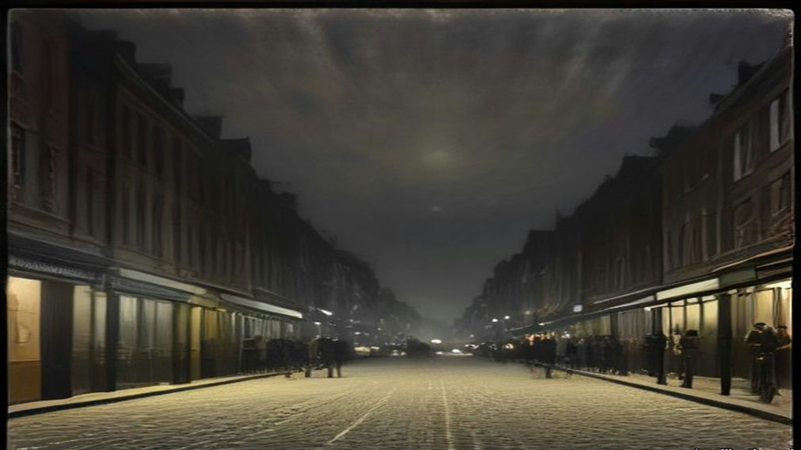
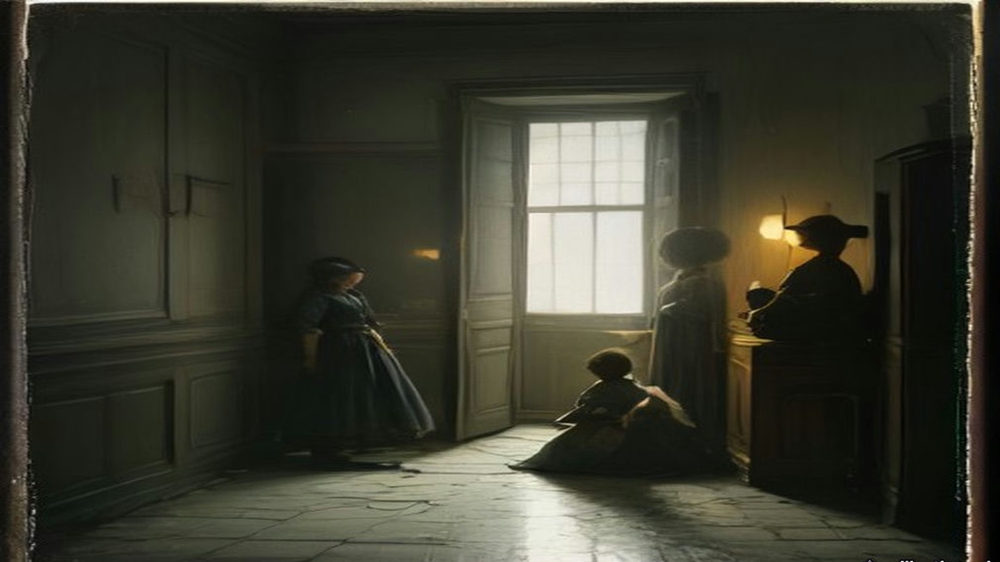
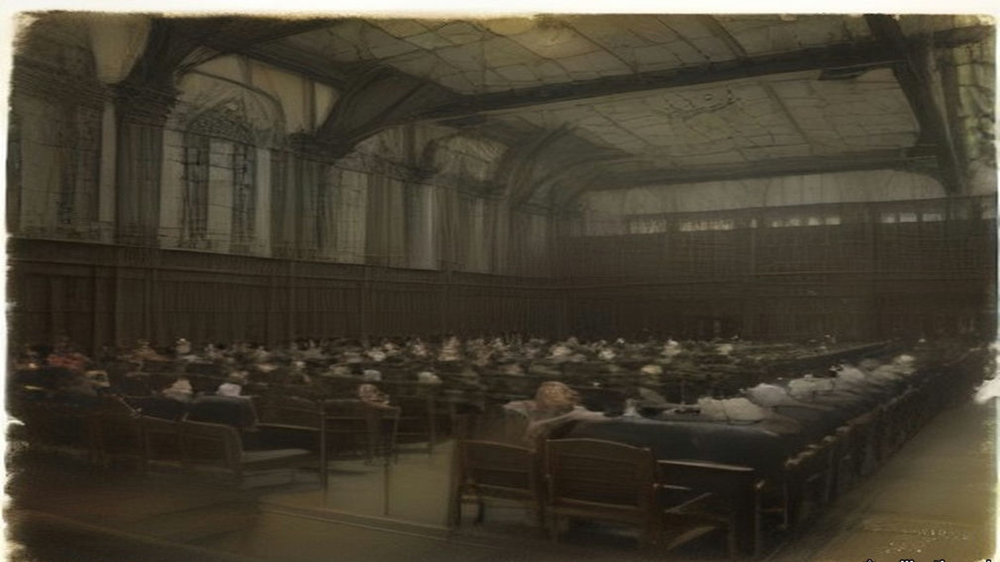
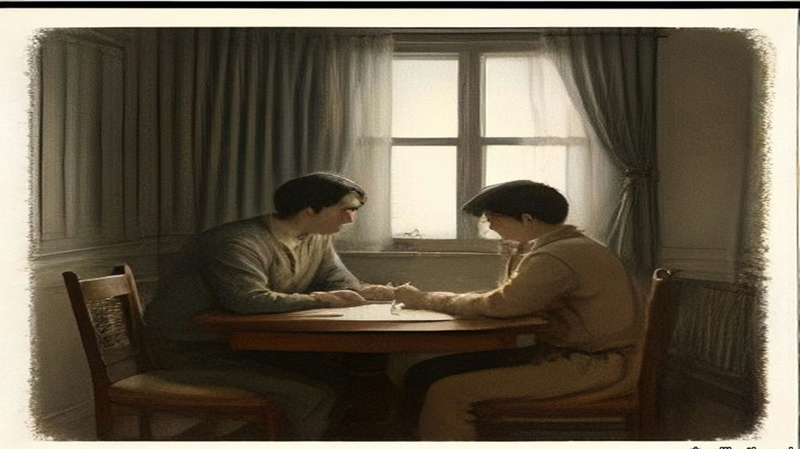
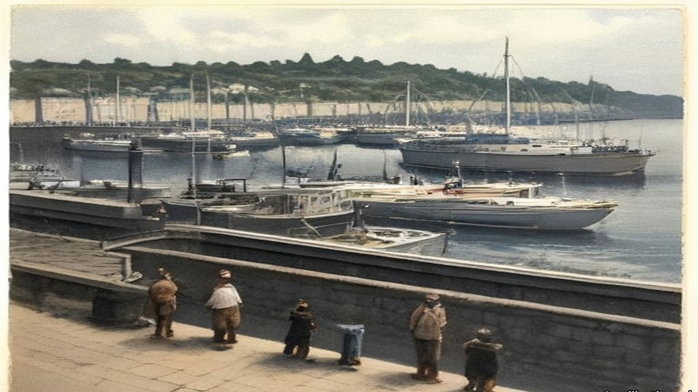

Chapter 17
Second Volley at Portobello, 1915–1916
Westminster, Dublin Castle, Westmoreland Street, Portobello Bridge, the Rathmines Road, Grosvenor Place, Downing Street and the Four Courts, 1915 to 1916
On Monday, 21 June 1915, Arthur Lynch asked the Chief Secretary for Ireland whether Mr. Sheehy Skeffington, "who was recently sentenced under the Defence of the Realm Act," had applied to be tried by a jury, "and, if so, why this right was denied him?"
Augustine Birrell explained the regulation. A man charged under it could choose a civil court and a jury only when the competent military authority decided that his case "cannot adequately be dealt with by a Court of Summary Jurisdiction." Sheehy Skeffington's case had not been decided to be such a case. A summary court had tried him, and no other court had jurisdiction.
Lynch asked who had started the prosecutions of the journalists, Milroy, MacDermott and the others. The cases had been reported to the competent military authority, Birrell said, and that authority had decided they should go ahead.
"Is the right hon. Gentleman consulted beforehand in regard to these matters?"
"Yes, in almost every case, I am."
Kellaway asked how many people had been prosecuted in Ireland for making statements calculated to prejudice recruiting.
"The answer is twenty-seven."
Lynch put a last question to the War Office: had the prosecutions of Sheehy Skeffington, Milroy and MacDermott encouraged recruiting in Ireland, or the contrary? Tennant answered that "there is room for considerable difference of opinion as to what will or will not affect recruiting adversely or favourably."
* * *
Dublin Castle and Westmoreland Street, Monday and Tuesday, 24 and 25 April 1916
The insurrection broke out early on Easter Monday, and by noon the rebels held many buildings and places in the city. During the attack on the Castle word went round that a British officer, Captain Pinfield, was lying near the gate of Dublin Castle, badly hit and bleeding, with firing going across the open ground in front of it. Nobody would go out to him.
Francis Sheehy Skeffington was in town. He persuaded a chemist to come with him, and the two of them went across the square under the fire. When they reached the gate the officer was gone. Some of his own people had got him in through the gate. There was a pool of blood on the ground where he had been.
That night his wife remonstrated with him for the risk.
"I could not let anyone bleed to death while I could help."
Hanna Sheehy Skeffington was a teacher of languages. Her husband edited a paper called the Irish Citizen. He wore a "Votes for Women" badge. He was opposed to the use of physical force. The Commission later found that he had no connection with the Rebellion. There were no police in the streets now. All Monday and Tuesday he went round the shops that were being looted and tried to save them. He talked to the crowds and held them back. He posted men as civic guards. He got priests and other civilians to help him. On the Tuesday he had a form printed for joining a civic organisation to check looting, and he called a meeting that evening to set up a civic police. By Tuesday evening, his wife said, everyone was afraid.
She met him at about half past five. They had tea together. She was anxious about their boy, who was seven, and she went home to Rathmines by roundabout ways to keep out of the firing. The last place she saw him was Westmoreland Street.

* * *
Portobello Bridge and the guard-room, Tuesday evening, 25 April
Lieutenant M. C. Morris of the 3rd Battalion, Royal Irish Rifles, had taken over the picket at Portobello Bridge an hour before. His men were in Davy's public house on the corner, where the Rathmines Road came over the Grand Canal. His orders were to do his utmost to avoid conflict, and to keep the roadway clear as far as he could. His picket had been fired at from time to time out of the houses close by. It was about dusk. The disturbances had been going on for some thirty hours.
A man came along the road from the city, walking by himself in the middle of it with a stick in his hand. A crowd followed him, and some of them were shouting out his name. Morris heard the name. He decided to detain him and send him to the barracks. He had done the same with one or two others who seemed likely to gather a crowd. There were no police to do it.
Sheehy Skeffington went quite willingly. Two soldiers walked him up the road, and about 350 yards past the bridge they turned in towards the main gate of Portobello Barracks. Morris stayed at his post.
The barracks covered about forty acres, between the canal on the north and the suburb of Rathmines on the south. They had been built for two battalions. That week there were not more than six hundred men in them, and half of those were out on duty. Officers and soldiers who had been home on leave when the fighting began had come in to the nearest barracks and reported, and the place was full of men who did not know one another. Lieutenant-Colonel McCammond, who commanded, was on sick leave. Major Rosborough had the command in his place. Rumours kept coming in of an attack on the barracks and of rebel successes in the city.
In the main guard-room three second lieutenants were sharing the duty, Dobbin, Tooley and Alexander Wilson. Dobbin was the senior of them. He was eighteen. He had left school the year before and had held his commission a few months, and he had seen nothing of fighting.
Sergeant Maxwell took the prisoner across to the orderly-room, where the Adjutant, Lieutenant Morgan, questioned him. Sheehy Skeffington said he was not a Sinn Féiner. He said he was in favour of passive resistance and opposed to militarism. There was no charge of any kind against him, and Morgan telephoned the Garrison Adjutant to ask whether he should go on holding him. The order came back to detain him for further inquiries. The others brought in that evening with no charge against them were to be let go. Against his name, on the charge sheet, someone wrote "no charge."
He asked for his wife to be told where he was. They refused.
He was taken back to the guard-room and searched by Captain J. C. Bowen-Colthurst of the Royal Irish Rifles, an officer of sixteen years' service and a man of exceptional height. He had been seriously wounded at the front and sent home. At about nine Bowen-Colthurst handed what he had found to the Adjutant. Morgan copied each paper. There were very few. None had anything to do with the disturbances except the draft form of membership for a civic guard.
* * *
The Rathmines Road, about eleven at night
Later that evening Bowen-Colthurst was ordered to take a party out and occupy premises at the corner of Camden Street and Harrington Street, the tobacco shop of Alderman James Kelly. Kelly was a Justice of the Peace and had lately been High Sheriff of the city. He was under suspicion through a misunderstanding. He had nothing whatever to do with the outbreak.
Second Lieutenant Leslie Wilson was the junior officer of the party. There were about forty men. Before they left, Bowen-Colthurst went to the guard and took Sheehy Skeffington out of it. He asked no one's leave. He was taking him as a hostage.
Wilson watched them tie the prisoner's hands behind his back. Then Bowen-Colthurst called on him to say his prayers. Sheehy Skeffington refused. Bowen-Colthurst ordered the men to take their caps off. Forty men stood bareheaded in the dark of the barrack square, and the captain prayed aloud over the man with the tied hands.
"O Lord God, if it shall please thee to take away the life of this man forgive him for Christ's sake."
They went out by the main gate and down the lane to the Rathmines Road. As the column came along the road the soldiers fired, to keep people away from the windows, Wilson said. Two young men were standing in the road, J. J. Coade and his friend Laurence Byrne. Coade had been at a meeting of the religious sodality at the Rathmines church that evening. Bowen-Colthurst asked them what business they had to be in the road at that hour, and warned them that martial law had been proclaimed.
Neither of them offered any violence. Bowen-Colthurst shot Coade. Coade fell, mortally wounded.
Wilson said afterwards that the captain fired a rifle. Two civilians who saw it said he brandished a revolver and fired that. Hanna Sheehy Skeffington was told that Bowen-Colthurst said "Bash him," that a soldier broke the boy's jaw with a rifle butt, and that Bowen-Colthurst shot him as he lay. Coade was seventeen, by her account. The ambulance took him to the hospital in the barracks.
The party went on to Portobello Bridge. There Bowen-Colthurst divided it. He left half the men with Wilson at the bridge, and he left Sheehy Skeffington there too. If he and his men were "knocked out," Wilson was to take command. If they were fired on, Wilson was to shoot Sheehy Skeffington.
Then the captain went on with the rest towards Kelly's shop, three hundred yards off.
Wilson stood at the bridge with his half of the party and the prisoner, his hands still tied. Later he told the Commission he saw nothing "strange" in the order.
Back at the barracks, Sergeant Maxwell told the Adjutant that the prisoner had been taken out. Morgan put the time at about twenty past ten. He went to Dobbin and asked him for a written report.
"April 25th, 11.10 p.m.
"An armed party under Captain J. C. Bowen-Colthurst has just passed through my guard, demanding and taking with him the last captured prisoner, Sheehy Skeffington."
Dobbin did not write the word hostage. He told the Commission he did not know what the captain wanted the prisoner for.

* * *
Alderman Kelly's shop, the same night
Miss Kelly was in her brother's shop when the soldiers came. The Alderman was not there. A friend of his, Patrick McIntyre, had been on the premises some time. Thomas Dickson lived close by in Harrington Street, and when he heard the soldiers firing as they came up the road he ran into the shop to take refuge.
They threw a bomb into the shop. Nobody resisted them. Then Bowen-Colthurst was inside, very tall, in a state of great excitement. Miss Kelly heard him tell everyone there that "as martial law had been proclaimed" he could shoot them as he had shot someone in the street.
The soldiers took four men. Two were let go soon after. The other two were Dickson and McIntyre. Dickson was the editor of a paper called the Eye-Opener. McIntyre edited one called the Searchlight. Dickson was a Scotchman, and he was deformed. Neither of them had any connection with Sinn Féin. Their only offence was being found on Kelly's premises.
The advance party had been gone about twenty minutes. On the way back Bowen-Colthurst picked up Wilson's half at the bridge, and Sheehy Skeffington with it, alive.
In the barracks Bowen-Colthurst made a verbal report to Major Rosborough with the Adjutant present. He said he had taken Sheehy Skeffington with him and arrested Dickson and McIntyre. He said nothing about Coade. Rosborough was working at great pressure that night, and afterwards he had no memory of the interview at all. Nobody gave Bowen-Colthurst a reprimand that anyone remembered.
Dickson and McIntyre were searched. Nothing material was found on them. They spent the night in the detention room with the other civilians. Sheehy Skeffington, "as being of a superior social position," was put in a separate cell by himself and made as comfortable as possible.
Bowen-Colthurst wrote afterwards that he was busy that night until about three in the morning going through their papers.
* * *
The detention room, Wednesday morning, 26 April
We were in that room all night, a dozen of us or more, and none of us charged with a thing. I was brought in off the street the same as the rest. You sat on the floor with your back to the wall and your knees up, and whenever you shut your eyes a door would bang somewhere or a man would shout and you'd be awake again.
The two editors were in with us. The little Scotch fellow, Dickson, with the crooked back. He hardly said a word the whole night. McIntyre talked a while and then he stopped.
Skeffington we didn't see. They had him in a cell on his own.
In the morning there were boots in the passage and voices, and they called the two of them out. Then they called Skeffington. We heard the door of his cell. We heard them go out the few steps into the yard.
Nobody said anything. Not a word out of the three of them.
Then the volley.
It came through the wall into the room like a blow on the chest. A man near me got up on his knees and I could hear him breathing. Somebody said, "Another poor fellow gone."
I thought, we're next. I thought it as plain as that.
There was talking in the yard. Then a while, a minute, two minutes. I couldn't tell you. Then four more shots together.
After that, for a long time, the sound of water being thrown down, and a brush going on stone.
* * *
The guard-room yard, Portobello Barracks, Wednesday, 26 April, shortly after ten
Sergeant John W. Aldridge of the 10th Royal Dublin Fusiliers had been on leave when the rebellion started. When he got back to Dublin he reported at the nearest barracks, like many other soldiers that week, and he was new to Portobello. He did not know the officers by sight. He mounted guard at nine on Wednesday morning.
The three subalterns were the same as the night before. Dobbin was standing out in the barrack square near the guard-room entrance.
Shortly after ten a captain came in. He walked past Dobbin without a word, came straight into the guard-room and gave his orders to the sergeant. He wanted the three prisoners, Skeffington, Dickson and McIntyre, in the yard. He wanted to speak to them.
Aldridge had never seen him. He could see from the uniform that he was a captain. He did not know who the officers of the guard were. A captain giving orders in a guard-room was nothing out of the way to him. He carried them out. Sheehy Skeffington was called out of his cell, and Dickson and McIntyre out of the detention room, and the three of them were ordered out into the yard.
The yard lay inside the guard-room block, at the end of a short passage. It was less than forty feet long and some fifteen feet wide. There were high brick walls all round it.
While the prisoners were being called, the captain stepped back out to Dobbin. He told him he was taking the three prisoners out to shoot them. He thought "it was the best thing to do." Then he went back inside.
Dobbin called Lieutenant Alexander Wilson, who had his bicycle with him, and sent him with an urgent message to the Adjutant. The orderly-room was some five hundred yards away. Wilson rode off across the square.
Inside, Bowen-Colthurst ordered some of the guard out into the yard with their rifles. Every man on duty had a full magazine. Seven went, the seven who happened to be standing nearest the passage. Aldridge went out with them.
The three prisoners had gone out ahead. The captain ordered them to walk to the wall at the far end. It was only a few yards. As they walked, the seven soldiers came out of the passage behind them and fell into line along the wall by the entrance. The three men reached the end wall. They turned round to face the soldiers.
The captain gave the order to fire.
Seven rifles went off together between the high walls.
All three men fell.
No one had said anything. None of the three had made a sound.
Bowen-Colthurst left the yard. The firing party began to file out past the sergeant.
Wilson was back on his bicycle by then. He was outside the guard-room, giving Dobbin the Adjutant's answer, when the volley went off in the yard beside them. The Adjutant's answer was that Major Rosborough was out, that the Adjutant could give no authority for any prisoners to be taken out of the guard-room, and that if Captain Bowen-Colthurst took them out he would be acting on his own responsibility.
Dobbin ran through the guard-room and into the yard. He looked at the bodies. One of Sheehy Skeffington's legs moved.
"Sergeant, that man is not dead."
Aldridge had been a soldier a long time. He thought death had been instantaneous in all three, and that what the young officer saw was a contraction of the muscles of the leg. Dobbin did not wait to be told it. He sent Lieutenant Tooley to the orderly-room to report and to get instructions. At or near the orderly-room Tooley met Bowen-Colthurst. The captain gave him an order to "fire again."
Tooley came back with it. Dobbin ordered four soldiers of the guard into the yard. Not all of them had been in the first party. On Dobbin's directions they fired a second volley into the body of Mr. Sheehy Skeffington.
From the arrival of the captain at the guard-room to the end, the whole of it took a very few minutes. The guard-room, the detention room, the cells and the yard were all in the one block, a few steps apart.
Before half past ten Bowen-Colthurst told the Adjutant in the orderly-room that he had shot Mr. Sheehy Skeffington and the editors of the Eye-Opener and the Searchlight. He said he had been afraid they would escape, or be rescued by armed force. At about the same time he reported it to Major Rosborough. He said he had shot the three prisoners on his own responsibility, and "that he possibly might be hanged for it." Rosborough told him to put it in writing, and told the Adjutant to report the matter to the Garrison Adjutant at Dublin Castle.
Morgan went over to the guard-room and saw the three bodies carried out. Then he telephoned the Garrison Adjutant, Captain Burton. Because of the seriousness of it he also telephoned Headquarters, Irish Command, direct. Rosborough ordered that Bowen-Colthurst was not to be detailed for duty outside the barracks. No more was done about him until 6 May.
Later in the day Morgan telephoned again to ask what to do with the bodies, which were lying in the mortuary. He was told to bury them in the barrack yard that evening. With the Medical Officer, Major Balch, and the Engineer Officer, he had them wrapped in sheets and buried in the barrack square. There were no coffins to be had. Father O'Loughlin, the barracks chaplain, read the rites over all three.
Rosborough kept asking Bowen-Colthurst for his written report all that day. It came in late in the afternoon.
He wrote that he had been up until about three "examining documents found on these three men," and that he had recognised from them "that these 3 men were all very dangerous characters." He wrote that he had gone to the guard-room to examine them and sent them into the yard because the guard-room was full. "I regret now that I did not have these three men handcuffed and surrounded, as the yard was a place from which they might have escaped." The guard had been some distance off. "I called upon the guard to fire upon them, which they did with effect, the 3 men being killed."
The Commission found the account of the Wednesday morning "entirely untrue." "There was no possibility of the prisoners making their escape from the yard, a fact which is obvious to anyone who has seen it." Any documents found on them "could be thoroughly examined in a few minutes."
* * *
Portobello Barracks and 11 Grosvenor Place, Friday, 28 April
By Friday Hanna Sheehy Skeffington still had no word. Rumours came from every side. He was wounded and in a hospital. A looter had shot him. The police had arrested him. Someone told her he had been executed. She would not believe it. Even if he had been condemned, she thought, he would have been tried first, and she would have been told. She tried to see a doctor who was attached to the barracks, and the police stopped her.
On Friday morning her two sisters, Mrs. Culhane and Mrs. Kettle, went to Rathmines police station to ask. The police had nothing to tell them and suggested they try the barracks. Their brother, Lieutenant Sheehy of the Dublin Fusiliers, was fighting in the city that week. Mrs. Kettle's husband, Lieutenant T. M. Kettle, was with his battalion. Mrs. Culhane's husband, lately dead, had been a high official in the Irish Courts of Justice.
They reached Portobello at about one. A young officer, Lieutenant Beattie, came to ask their business. They asked first after their brother, and he answered them courteously. Then they asked after their brother-in-law, Mr. Sheehy Skeffington. The young man became confused, asked them to excuse him, and went away to consult some other officers. When he came back he told them he regretted he would have to put them under arrest. They were Sinn Féiners, he said, and had been seen speaking to Sinn Féiners.
Soldiers marched them across the square to the orderly-room and stood round them there. After some minutes a very tall captain came out of the guard-room and questioned them. They asked again about their brother and their brother-in-law.
"I know nothing whatever about Mr. Sheehy Skeffington."
Mrs. Culhane mentioned some of the rumours. Beattie said something to the captain in an undertone.
"I have no information concerning Mr. Skeffington that is available, and the sooner you leave the barracks the better."
He ordered them taken back, and that they were not to speak to one another. At the gate the guard was dismissed, and Beattie walked them to the tram line.
At about four o'clock, after her sisters came home, Hanna found the father of the boy Coade. Father O'Loughlin had known young Coade from the sodality and had told the father, and the father had been let in to see his son's body in the barracks mortuary. Lying beside his son he saw the body of Mr. Sheehy Skeffington. He told her so. She went straight to Father O'Loughlin. The priest told her that her husband was dead and already buried.
She went home a little after six.
At seven she was upstairs putting Owen to bed. The maid saw soldiers lining up outside the house, panicked, and ran out the back door with the boy. Hanna went after them to call them back. The house would be watched front and back. A child seen running would be shot.
She was at the foot of the stairs when a volley was fired into the front windows.
The glass came in. Rifle butts smashed what was left. They were breaking in all over the house at once, at the front door, at the back, some of them up on the roof. No one had knocked. No one had asked for the door to be opened. Then Bowen-Colthurst was in the hall with a squad behind him and the bayonets fixed, coming at the three of them, the maid, the child and herself.
"Hands up!"
Owen cried out at the bare steel.
She put her arm round him. "These are the defenders of women and children."
They put up their hands. They were marched into the front room and told they would be shot if they stirred. Soldiers knelt outside the windows with their rifles levelled at the room. Inside, men with bayonets stood over them. Colonel Allett was there, and a Lieutenant Brown, and about forty men.
For over three hours she sat in the front room with her arm round her son and listened to them go through her house. She could hear the officers jeering as they turned over her things. Bowen-Colthurst had her husband's keys, taken off his body, and he opened the study that Frank always kept locked. They took the books, many of them her own German textbooks, and his papers and pamphlets. They took the letters he had written her before they were married, his articles and a play in manuscript. They wrapped them in the household linen and carried them out to a motor car they had stopped in the road.
One of the soldiers was a Belfast man. "I didn't enlist for this," he said. "They are taking the whole bloomin' house with them."
They left at a quarter past ten.

Some time later Bowen-Colthurst produced a printed pamphlet called "Secret Orders Issued to the Military," with a note attached to it in red ink, in his writing: "I certify that I found this document on the person of F. Sheehy Skeffington." It was signed and dated 25/4/16. Lieutenant Morgan, who had copied every paper taken from the prisoner on the Tuesday night, satisfied the Commission that it had not been among them. The Commission found the certificate untrue.
* * *
Dublin and Westminster, May 1916
On Monday, 1 May, two soldiers under a Sergeant Claxton came to the house while Hanna and Owen were out. Bowen-Colthurst had nothing to do with this visit. The maid of the Friday had been terrified and had left. The new one, a temporary girl named Margaret Farrelly, nineteen or twenty years old, was arrested and taken to Rathmines police station. She was kept there until the Saturday, when Hanna got her released.
Major Sir Francis Vane was one of the officers who had reported at Portobello when the fighting began. He was not an officer of the regiment there and had no responsibility for anything that happened. He tried to get Bowen-Colthurst arrested in Dublin and got nowhere. He crossed to London and went to the military authorities there. Hanna was told he saw Lord Kitchener on 3 May.
The Royal Commission found that "as a result of a communication to the military authorities in London, made by Major Sir Francis Vane," Bowen-Colthurst was put under open arrest on 6 May, and under close arrest on 11 May. In December the War Office told the Commons that the date of the arrest was 5 May, "and not 6th May, as erroneously stated in the Report," that it followed Sir John Maxwell's receipt of the report of the shooting, and that no telegram from Kitchener had ever been received in Ireland.
On Sunday, 7 May, Hanna said, bricklayers were brought into the yard by Colonel McCammond's order. They took out the bloodstained bricks and put new ones in. On 8 May her husband's body was taken up and reburied in Glasnevin, and she was not told. The bodies were exhumed by Maxwell's permission, and Mr. Sheehy Skeffington's father was present.
On Thursday, 11 May, John Dillon moved the adjournment of the House on the executions in Ireland. The Under-Secretary for War had told the House that day that fourteen had been executed. Dillon had thought it twelve. The Prime Minister said the true number was thirteen, because one case had been counted twice.
Dillon told the House that thousands of people in Dublin who ten days before had been bitterly opposed to the rebellion "are now becoming infuriated against the Government on account of these executions." He spoke of himself and his party. "We have risked our lives a hundred times to bring about this result," he said, "and now you are washing out our whole life work in a sea of blood."
Then he came to Portobello. The military authorities in Dublin, he said, had told the Prime Minister that Mr. Skeffington was shot "without the knowledge of the military authorities," and that the officer had been under arrest since 6 May. Dillon read out the statement Hanna had given him.
Asquith answered him. A statement of that kind, "which reflected very severely on the subsequent conduct at her own house of British officers and soldiers, I confess I cannot believe and I do not believe." He said it should be examined.
"Public?" said Dillon.
"Yes, certainly, a public examination."
The same day Alfie Byrne asked for a sworn inquiry into the deaths of Sheehy Skeffington and of James M'Cartney, the Lord Mayor's manager, killed with three others at 27 North King Street, and whether the Government would compensate their widows. Herbert Samuel answered. "I am not in a position to make any statement at present as to compensation."
On 24 May T. M. Healy and Joseph Devlin asked when the promised public inquiry would be held. Asquith said it could not take place "until the conclusion of the court-martial."
On 6 and 7 June Bowen-Colthurst was tried by court-martial in Dublin for the murder of the three men. Lord Cheylesmore presided. Hanna was not allowed to give evidence, and Vane was not called. The court found Bowen-Colthurst guilty but insane at the time of the crime, and he was sent to Broadmoor Criminal Lunatic Asylum. Hanna wrote that he kept his rank of captain and drew half pay for several months.

* * *
The Cabinet room, Downing Street, Wednesday, 19 July 1916
In July Hanna went to London to see editors and members of Parliament. On 19 July the Prime Minister sent for her. She brought a witness with her, the suffragist Muriel Matters.
Asquith saw them in the room where the Cabinet met. He sat at the middle of the green baize table with his secretary, and the two women sat at the end of it. He never looked her straight in the face. He glanced at her sideways and tapped his fingers on the baize.
He explained the difficulties in the way of keeping his promise. The House, he said, would refuse a sworn inquiry, and nothing else would be satisfactory. Would she be satisfied with an inadequate inquiry, which was the best they could do? She said she would not be satisfied with any inquiry that he told her in advance would be inadequate.
Then he came round to compensation. She had been sounded before, unofficially and from several quarters, with her boy's future put to her. She had been told that the military would not allow an inquiry, but that compensation "adequate and even generous" would be assured. Now Asquith put it to her himself, very delicately. The other injured people were asking for compensation. Would she not consider it too? Nothing could undo the past.
She told him the only compensation she would ask or take was the one he had promised: a full public inquiry into her husband's murder.
"Were the military blocking him?"
"No, no."
"In that case, Mr. Asquith, will you say yes or no? It is time that I had an answer."
He said he would answer Mr. Dillon on the Thursday.
* * *
The Four Courts, Dublin, Wednesday, 23 August 1916, and after
The Royal Commission was dated 17 August. Sir John Simon was its chairman, with Mr. Justice Molony and Denis Henry, K.C. It held its first sitting at eleven o'clock on the morning of Wednesday, 23 August, at the Four Courts. The Attorney-General appeared for the Government. T. M. Healy, K.C., appeared for the families of Sheehy Skeffington and of Dickson, and a solicitor, Mr. Brennan, for the family of McIntyre. Counsel appeared for the military, for Major Rosborough and Lieutenant Morgan, and for Alderman Kelly.
It sat for six days and heard thirty-eight witnesses. It did not hear Bowen-Colthurst. He was in Broadmoor, and the Commissioners held themselves debarred from taking his evidence.
Miss Kelly told them what the captain had said in the shop about martial law. Lieutenant Leslie Wilson told them about the prayer and the bridge. Dobbin's note of 11.10 p.m. was produced. Mrs. Kettle described the Friday, and the military did not dispute a word of it. Lieutenant Beattie was in court and was not called, because his evidence would in no way contradict hers. The Commission found that the part he had been made to play was extremely distasteful to him.
Their report was signed on 29 September.
The Commissioners wrote that a proclamation of martial law "does not, in itself, confer upon officers or soldiers any new powers." "The shooting of unarmed and unresisting civilians without trial constitutes the offence of murder, whether martial law has been proclaimed or not." Of Bowen-Colthurst they wrote, "Apart from the defence of insanity, there can be no excuse or palliation for his conduct from first to last." They found it "highly regrettable and most surprising" that after the Wednesday he had been free to go out with a body of soldiers, as he did on the Friday.
On 15 November Swift MacNeill asked the War Office why Vane, "commended for his conduct during the rebellion," had been ordered by Maxwell on 26 May to leave Ireland and on 30 June "relegated to unemployment." Henry Forster told him Vane had been at headquarters on 1 May on another matter, "but made no report on the Skeffington case."
On 14 December Hugh Law asked how, if Bowen-Colthurst had been under the personal supervision of his commanding officer from 26 April, he had been able two days later to go out into the street and attack Mrs. Sheehy Skeffington's house. Forster gave no answer to that. Law asked why Vane had been relegated to unemployment. Forster referred him to an answer given on 3 August.


Important names
- Samuel, Herbert (1 mentions in this chapter): British Liberal politician and first High Commissioner for Mandate Palestine (1920–1925).
Sources
- Report of the Royal Commission on the arrest and subsequent treatment of Mr. Francis Sheehy Skeffington, Mr. Thomas Dickson and Mr. Patrick James McIntyre [Cd. 8376], 1916, signed 29 September 1916 by John Simon, Thomas F. Molony and Denis S. Henry. Digitised by the University of Southampton Library (https://archive.org/details/op1256532-1001). Read in the OCR text, with paragraphs 34 to 39, 45 to 48 and 52 to 53 read from the page images, where the OCR is damaged. Used for: the Commission of 17 August and the first sitting at 11 o'clock on 23 August at the Four Courts (paras 1–2); counsel (3); six days and thirty-eight witnesses (4); McCammond on sick leave, Rosborough in command (5); the rising at noon on the 24th and officers on leave reporting (6); the barracks, about 40 acres, not more than 600 men, half on duty outside, the rumours (7); "a well-known figure," shortly before 8 p.m., 11 Grosvenor Place, about 350 yards (9); no connection with the Rebellion, "opposed to the use of physical force," the appeal against looting, the form of membership, the crowd shouting his name (10); about dusk, some thirty hours, Lieutenant M. C. Morris, the picket at Davy's public house, his orders, the escort of two men (11); fired at from houses, no police, "he went quite willingly" (12); Dobbin, Tooley and Alexander Wilson, Dobbin eighteen, Sergeant Maxwell, Morgan's questioning, "not a Sinn Feiner ... passive resistance and opposed to militarism," the telephone, "detained for further inquiries" (13); Bowen-Colthurst's sixteen years, his wound, the search about 9 o'clock, "a draft form of membership for a civic guard" (14); Alderman James Kelly, Camden Street and Harrington Street, J.P. and lately High Sheriff, "quite innocent," the route (15); the hostage, "extraordinary, and indeed almost meaningless," Second Lieutenant Leslie Wilson and about forty men, the hands tied, the prayers refused, "hats off," and the prayer (16); Coade and Laurence Byrne, martial law, Coade shot and "mortally wounded," the ambulance, rifle against revolver, Bowen-Colthurst "a man of exceptional stature," the firing at the windows (17); "None of the evidence offered to us afforded any justification" (18); the division at the bridge, "knocked out," the order to shoot (19); about twenty minutes, the bomb, no resistance, McIntyre and Dickson, Miss Kelly's account, "a state of great excitement," four taken and two released (20); about 10.20 p.m. and Dobbin's note of 11.10 p.m. (21); the verbal report to Rosborough, nothing said of Coade (22); no reprimand (23); the detention room and the separate cell, "as being of a superior social position" (24); the Eye-Opener and the Searchlight, "a Scotchman, and deformed," no connection with Sinn Féin (25); Sergeant John W. Aldridge of the 10th Royal Dublin Fusiliers, guard mounted at 9 a.m. (26); shortly after 10 a.m., the orders to the sergeant, the yard "less than 40 ft. in length and some 15 ft. in width ... surrounded by high brick walls" (27); Aldridge not knowing him (28); "it was the best thing to do," Wilson's bicycle, 500 yards (29); the Adjutant's answer (31); full magazines, seven men, "no sound was uttered by any of the three" (32); the walk to the wall, the turn, the order, "All three fell" (33); "Sergeant, that man is not dead," Aldridge's view, Tooley, "fire again," four soldiers, the second volley (34); the shot heard in the detention room (35); "a very few minutes" (36); before 10.30 a.m., "escape or might be rescued by armed force," "possibly might be hanged for it" (37); Captain Burton, the telephone to Headquarters, Irish Command, the order not to be detailed outside, no further action until 6 May (38); burial in sheets in the barrack square, Major Balch, Father O'Loughlin, the exhumation with Maxwell's permission and Mr. Sheehy Skeffington senior (39); the written report and the passages quoted from it (40); "entirely untrue" and "no possibility of the prisoners making their escape" (41); Broadmoor and the court-martial's finding (43); Friday and Westmoreland Street (44); the sisters and their families (45); about one p.m., Lieutenant Beattie, the arrest, "I know nothing whatever about Mr. Sheehy Skeffington," "the sooner you leave the barracks the better," the tram line (46); Beattie's part "extremely distasteful" (47); about four o'clock, Coade's father, the sodality, the mortuary, "dead and already buried" (48); 7 p.m., the boy aged seven, the volley through the windows, the bayonets, no request to open the door, the front room, German textbooks, the household linen and the motor car, a quarter past ten (49); 1 May and Margaret Farrelly (50); the "Secret Orders" pamphlet and the red-ink certificate (52); Vane's communication, open arrest on 6 May and close arrest on 11 May, the court-martial of 6 and 7 June, "guilty but insane" (53); "no excuse or palliation" (54); "does not, in itself, confer ... any new powers," the order seen as nothing "strange," "highly regrettable and most surprising," "constitutes the offence of murder" (55).
- Hanna Sheehy Skeffington, "British Militarism As I Have Known It," in A Forgotten Small Nationality: Ireland and the War (New York, 1917), a digest of her American lecture. Read in the proofread Wikisource transcription of the printed pamphlet, pp. 17–32 (https://en.wikisource.org/wiki/A_forgotten_small_nationality/British_Militarism_As_I_Have_Known_It). Used for: Captain Pinfield, the chemist, the pool of blood, "I could not let anyone bleed to death while I could help"; the looting, civic guards, priests, "by Tuesday evening everyone was afraid"; tea at about 5.30 and the roundabout way home; the walking stick, alone in the middle of the road; the charge sheet marked "no charge" and the refusal to tell her; "Bash him," the jaw, Coade aged seventeen; the rumours and her refusal to believe the execution; the doctor and the police; the maid running with Owen, the volley, the rifle butts, the roof, "Hands up!", "These are the defenders of women and children," Allett, Lieutenant Brown, about forty men, kneeling soldiers outside, over three hours, the jeering, the keys and the locked study, the letters and the play, "I didn't enlist for this. They are taking the whole bloomin' house with them"; Vane and Kitchener on 3 May; the bricks on Sunday 7 May "by order of Colonel McCammond"; Cheylesmore; her exclusion from the court-martial and Vane not being called; the half pay; London in July, 19 July, Muriel Matters, the Cabinet room, the green baize, the sideways glance, the inquiry and compensation "adequate and even generous," "Were the military blocking him?", "No, no," "will you say yes or no? It is time that I had an answer," the Thursday answer to Dillon. The "Votes for Women" badge is in her account of what was taken from his body.
- House of Commons Debates, 21 June 1915, vol. 72, cc. 929–31, "Arrest of Mr. Sheehy Skeffington" (Lynch's questions; Regulation 56 (3); "cannot adequately be dealt with by a Court of Summary Jurisdiction"; Regulation 55 (3); "Yes, in almost every case, I am"; twenty-seven). Saved at research/ch12/hans.
- House of Commons Debates, 11 May 1916, vol. 82: "Civilians Shot," cc. 884–5 (Byrne on compensation; Samuel, "I am not in a position to make any statement at present as to compensation"); "Continuance of Martial Law," cc. 935–70 (Dillon on fourteen and twelve executions; Asquith on thirteen; "now becoming infuriated against the Government on account of these executions"; "washing out our whole life work in a sea of blood"; the telegram, "without the knowledge of the military authorities," arrest since 6 May; the widow's statement read out; Asquith, "I confess I cannot believe and I do not believe"; "Public?", "Yes, certainly, a public examination"). https://api.parliament.uk/historic-hansard/commons/1916/may/11/continuance-of-martial-law
- House of Commons Debates, 24 May 1916, vol. 82, c. 2082 (Healy and Devlin; the inquiry to follow "the conclusion of the court-martial"); 15 November 1916, vol. 87, cc. 771–2, "Captain Colthurst" (MacNeill on Vane, Kitchener, 26 May and 30 June, "relegated to unemployment"; Forster, arrest on 5 May, "no telegram or letter," "made no report on the Skeffington case"); 14 December 1916, vol. 88, cc. 833–5 (Law; Forster on 5 May "and not 6th May, as erroneously stated in the Report," "no such telegram was ever received in Ireland"; Law's question on the Friday raid; the reference to 3 August). https://api.parliament.uk/historic-hansard/commons/1916/dec/14/shooting-of-me-sheehy-skeffinston